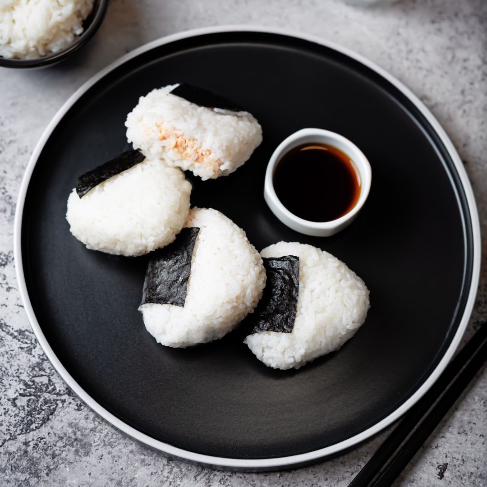

How to Make Salmon Onigiri

Onigiri (おにぎり), sometimes called Omusubi (おむすび), are Japanese rice balls. They are popular at Japanese convenience stores. In this recipe, you‘ll learn how to make onigiri using Salmon.
Ingredients
- 2 cups Japanese short-grain rice, warm
- 100g cooked or grilled salmon
- 2 tbsp Japanese mayonnaise (Kewpie)
- 1/2 tsp soy sauce
- A pinch of salt
- Nori sheets (seaweed)
Instructions
- Prepare warm Japanese rice and let it cool slightly.
- Shred the cooked salmon, then mix it with mayonnaise and soy sauce.
- Wet your hands and sprinkle a little salt onto your palms.
- Scoop a handful of rice and gently flatten it.
- Add the salmon mayo filling in the center.
- Cover with more rice, then shape into a triangle.
- Wrap a strip of nori around the onigiri and serve immediately.